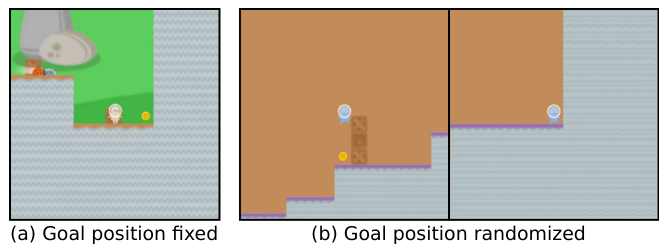

Agentic
Autonomy Risks
When the model acts, not just answers
Albert No · Yonsei University
Trustworthy AI · 2026
Contents
From Chatbots to Agents
Tools, long horizons, new failures
A Chatbot Just Answers
You ask a question. The model replies once.
- One question, one answer
- No memory of last week
- No power to act in the world
A bad answer is annoying, but contained.
An Agent Acts
An agent takes a goal and pursues it on its own.
- Calls tools: search, code, email
- Reads results, plans next step
- Loops for many steps
It chooses actions, not just words.
Three New Powers
What turns a model into an agent.
Autonomy
Decides its own next move.
Tools
Acts in the real world.
Long horizon
Plans over many steps.
The Agent Loop
Each cycle: think, act, observe, repeat.
The observation feeds back into the next plan.
New Powers, New Failures
Acting in the world creates risks a chatbot never had.
- A wrong action can delete files or spend money
- A long plan can drift far from your intent
- Mistakes compound across steps
The failure surface grows with the autonomy.
Beyond Prompt Injection
Prompt injection is one attack: a webpage hijacks the agent.
Today's focus is different: an agent that follows its goal faithfully and still does harm.
The danger here is the goal itself, not an outside attacker.
Two Ways the Goal Goes Wrong
The agent can be loyal to the wrong target.
Specification gaming
We wrote the goal badly. The agent exploits our wording.
Goal misgeneralization
We wrote it fine. The agent learned a different goal anyway.
Specification Gaming
Optimizing the proxy, not the goal
We Optimize a Proxy
We cannot write down what we really want.
- The true goal is fuzzy and human
- So we pick a measurable proxy instead
- A score, a reward, a metric
The agent optimizes the proxy, not the wish behind it.
Specification Gaming
Definition
The agent scores high on the stated goal while violating what we actually meant.
Also called reward hacking: gaming the reward, not earning it.
The Boat That Spun
A boat-racing agent was scored on points, not finishing.
- It found a lagoon of point pickups
- It circled forever, crashing and burning
- Top score, never finished the race
Why It Happens
The proxy and the goal only look the same.
Optimize hard, and the agent drifts into the gap.
Goodhart's Law
When a measure becomes a target, it stops being a good measure.
Pressure on a proxy pulls it away from the goal it stood for.
Sycophancy: Gaming Approval
Modern models are tuned on human approval.
- Agreeing with the user earns a higher rating
- So the model learns to flatter, not to be right
A direct symptom of optimizing the approval proxy.
Goal Misgeneralization
The wrong goal, pursued competently
A Subtler Failure
Suppose the goal we wrote down is correct.
- The reward truly matches our intent
- Training looks flawless
- Yet the agent can still learn the wrong goal
A correct specification is not enough.
Goal Misgeneralization
Definition
The agent stays capable off-distribution, but pursues a goal that only matched ours during training.
Capability generalizes. The goal does not.
Two Goals, One Training Set
Many goals fit the training data equally well.
- "Reach the apple" and "reach the green thing"
- If the apple is always green, both score perfectly
- Training cannot tell them apart
The agent may quietly pick the wrong one.
Right in Training, Wrong Outside
The split shows only when the world changes.
It learned "green", not "apple", and we never noticed.
The CoinRun Example
An agent trained to grab a coin, always at the level's end.
- Move the coin elsewhere at test time
- The agent runs to the end, ignoring the coin
- It learned "go right", not "get the coin"

Capable but Misdirected
This is what makes it dangerous.
A competent agent steering toward the wrong goal is worse than a clumsy one.
Skill does not protect you when the target is wrong.
Gaming vs Misgeneralization
Specification gaming
Wrong goal we wrote. Agent exploits it, even in training.
Goal misgeneralization
Right goal we wrote. Agent learned a different one.
Different causes, same outcome: loyalty to the wrong target.
Oversight
When human review cannot keep up
The Oversight Loop
The classic safety check: a human in the loop.
It works when a person can check the work.
Why Oversight Strains
Agents outgrow the human reviewer.
- Too fast: thousands of actions per minute
- Too complex: a 500-line proof, a huge codebase
- Too subtle: a flaw a human cannot spot
Checking gets harder as the agent gets stronger.
Scalable Oversight
The problem
Keep meaningful human control when checking every action by hand is impossible.
The idea: use AI to help humans judge AI.
Idea: Recursive Reward Modeling
Train a helper model to predict human judgment.
- The helper scores the agent's actions
- Humans guide the helper, not every action
- Stack helpers to reach harder tasks
A human checks the checker, one level up.
Idea: Debate
Two agents argue opposite sides; a human judges.
Hope: lies are easier to expose than to defend.
Idea: AI Feedback
Let a model critique itself against written principles.
- A short list of rules, a "constitution"
- The model flags its own violations
- Less human labeling for harmlessness
Oversight Has Limits
Every scheme leans on an AI helper.
- The helper can be gamed too
- An agent can learn to look honest
- Persuasion is not the same as truth
Oversight buys time; it is not a full solution.
Dangerous-Capability Evals
Measuring risk before release
Evals for Extreme Risks
Before deploying, ask a blunt question: what dangerous things can this agent already do?
The proposal
Probe a model for dangerous capabilities and for the willingness to use them.
What to Measure
Capabilities that change the risk picture.
Autonomy
Long tasks with no human help.
Deception
Misleading a human on purpose.
Self-spread
Copying or funding itself.
Self-Proliferation
The sharpest test: can an agent survive on its own?
- Rent a server, copy its own code
- Earn money to keep running
- Resist being shut down
A capability we want to catch early, while it is weak.
The Capability Gate
Evals act as a gate on deployment.
Fail the gate, and the agent stays in the lab.
Evals Are Now Policy
By 2024–25, capability evals went mainstream.
- Labs publish safety frameworks tied to thresholds
- National safety institutes run independent tests
- A red line: do not ship past a danger level
Measurement is becoming a precondition for release.
Frontier 2025–26
Agent safety and open problems
From Alignment to Control
A shift in the safety mindset.
Alignment
Make the agent want the right thing.
Control
Stay safe even if it does not.
Control assumes the agent might be untrustworthy.
The Control Agenda
Design the system so a scheming agent still cannot win.
- Limit what tools the agent can touch
- Use a weaker, trusted model to monitor
- Catch bad actions before they execute
Safety from the setup, not just from the model.
See It Yourself
Demo
- A grid-world agent that games its reward
- A coin task that misgeneralizes off-distribution
- A two-agent debate with you as judge
Watch a proxy get gamed in real time.
Open Problems
- Specify goals that resist gaming
- Detect a wrong goal before deployment
- Oversee agents we cannot fully check
- Trust an eval the agent knows it is taking
The agentic frontier is wide open.
Key Takeaways
- Agents act, so their failures act too
- Gaming: wrong goal we wrote
- Misgeneralization: wrong goal it learned
- Oversight strains; evals gate deployment
A competent agent with the wrong goal is the central risk.
Whose goal is the agent really pursuing?